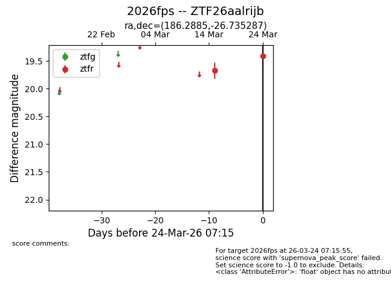
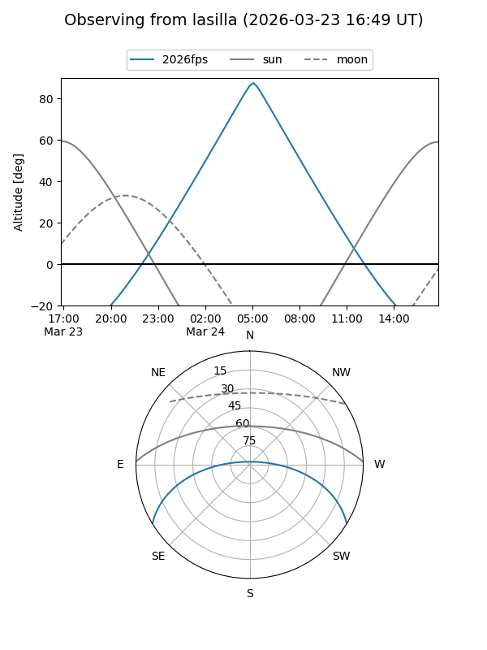
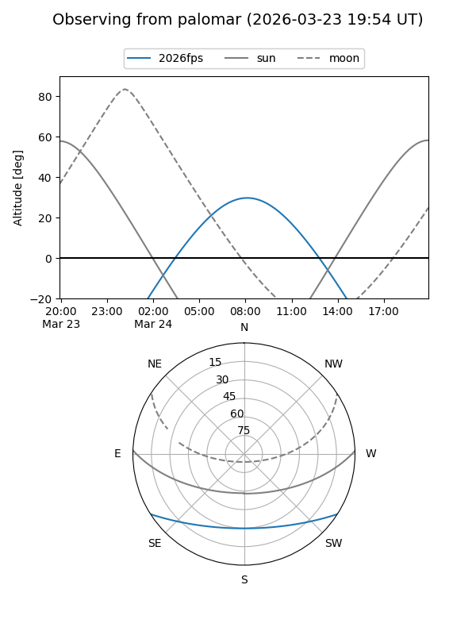
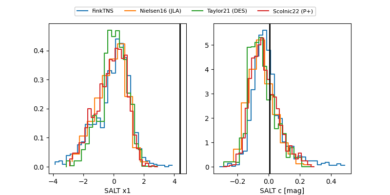

2026fps
Target 2026fps at 2026-03-24 07:18
Aliases and brokers:
FINK: link
Lasair: link
ALeRCE: link
TNS: link
YSE: link
alt names
ZTF26aalrijb (ztf,fink_ztf)
2026fps (tns,yse)
Coordinates:
equatorial (ra, dec) = 186.2885,-26.73529
equatorial (HMS+DMS) = 12:25:09.23,-26:44:07.03
galactic (l, b) = (295.6960,+35.76689)
Flags:
Photometry:
last ztfr=19.42
2 ztfr detections
Lightcurve

Visibility


Additional plots
